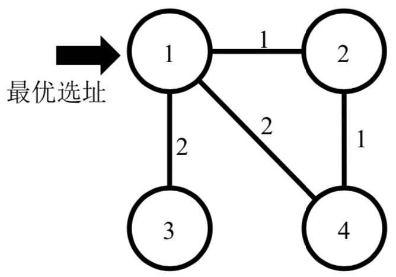
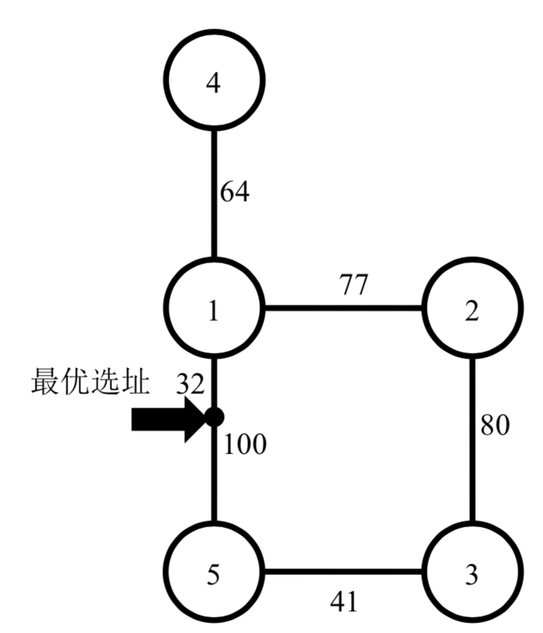

小T打算在城市C开设一家外送快餐店。送餐到某一个地点的时间与外卖店到该地点之间最短路径长度是成正比的，小T希望快餐店的地址选在离最远的顾客距离最近的地方。
快餐店的顾客分布在城市C的𝑁个建筑中，这𝑁个建筑通过恰好𝑁条双向道路连接起来，不存在任何两条道路连接了相同的两个建筑。任意两个建筑之间至少存在一条由双向道路连接而成的路径。小T的快餐店可以开设在任一建筑中，也可以开设在任意一条道路的某个位置上（该位置与道路两端的建筑的距离不一定是整数）。
现给定城市C的地图（道路分布及其长度），请找出最佳的快餐店选址，输出其与最远的顾客之间的距离。
第一行包含一个整数𝑁，表示城市C中的建筑和道路数目。
接下来𝑁行，每行3个整数，$𝐴_𝑖, 𝐵_𝑖, 𝐿_𝑖(1 ≤ 𝑖 ≤ 𝑁;𝐿_𝑖> 0)$，表明一条道路连接了建筑$𝐴_𝑖$与$𝐵_𝑖$，其长度为$𝐿_𝑖$。
仅包含一个实数，四舍五入保留恰好一位小数，表示最佳快餐店选址距离最远用户的距离。
注意：你的结果必须恰好有一位小数，小数位数不正确不得分。
4 1 2 1 1 4 2 1 3 2 2 4 1
2.0
5 1 5 100 2 1 77 3 2 80 4 1 64 5 3 41
109.0
【样例说明1】

如图所示，最优选址为建筑1。到达4个建筑的距离分别为0，1，2，2。
【样例说明2】

【数据规模和约定】
对于10%的数据，$𝑁 ≤ 80，𝐿_𝑖= 1$;对于30%的数据，$𝑁 ≤ 600，𝐿_𝑖≤ 100$;对于60%的数据，$𝑁 ≤ 2000，𝐿_𝑖≤ 10^9$;对于100%的数据，$𝑁 ≤ 10^5，𝐿_𝑖≤ 10^9$。
 Comet OJ
Comet OJ